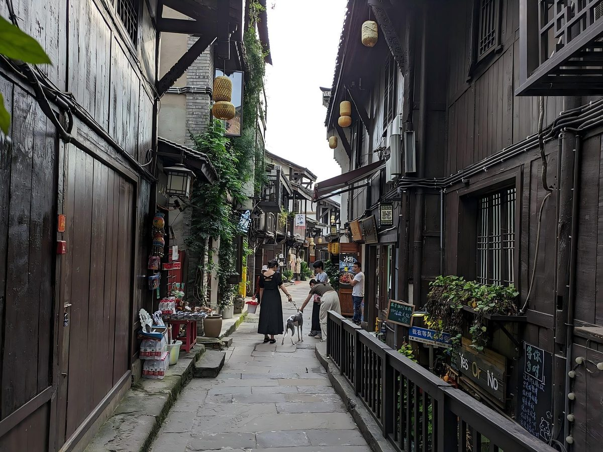

磁器口老街

"一条石板路，千年磁器口。" 古镇在嘉陵江边，明清时是水运码头，如今是老重庆的缩影。
老街里有什么
| 看点 | 说明 |
|---|---|
| 石板路 | 被磨得发亮，两侧是木结构的铺面 |
| 吊脚楼 | 靠江而建，一半悬在坡上 |
| 茶馆 | 盖碗茶配竹椅，坐一下午不催人 |
| 小吃 | 陈麻花、毛血旺、酸辣粉 |
| 码头 | 古镇因水运而兴，江边还留着旧码头的痕迹 |
什么时候去最好
早上八九点人最少，能拍到空一点的石板路；午后到傍晚最挤，热闹是热闹，但基本是被人流推着走。 想拍建筑，找巷子往深处走，主街之外的横巷安静得多。

"一条石板路，千年磁器口。" 古镇在嘉陵江边，明清时是水运码头，如今是老重庆的缩影。
| 看点 | 说明 |
|---|---|
| 石板路 | 被磨得发亮，两侧是木结构的铺面 |
| 吊脚楼 | 靠江而建，一半悬在坡上 |
| 茶馆 | 盖碗茶配竹椅，坐一下午不催人 |
| 小吃 | 陈麻花、毛血旺、酸辣粉 |
| 码头 | 古镇因水运而兴，江边还留着旧码头的痕迹 |
早上八九点人最少，能拍到空一点的石板路；午后到傍晚最挤，热闹是热闹，但基本是被人流推着走。 想拍建筑，找巷子往深处走，主街之外的横巷安静得多。